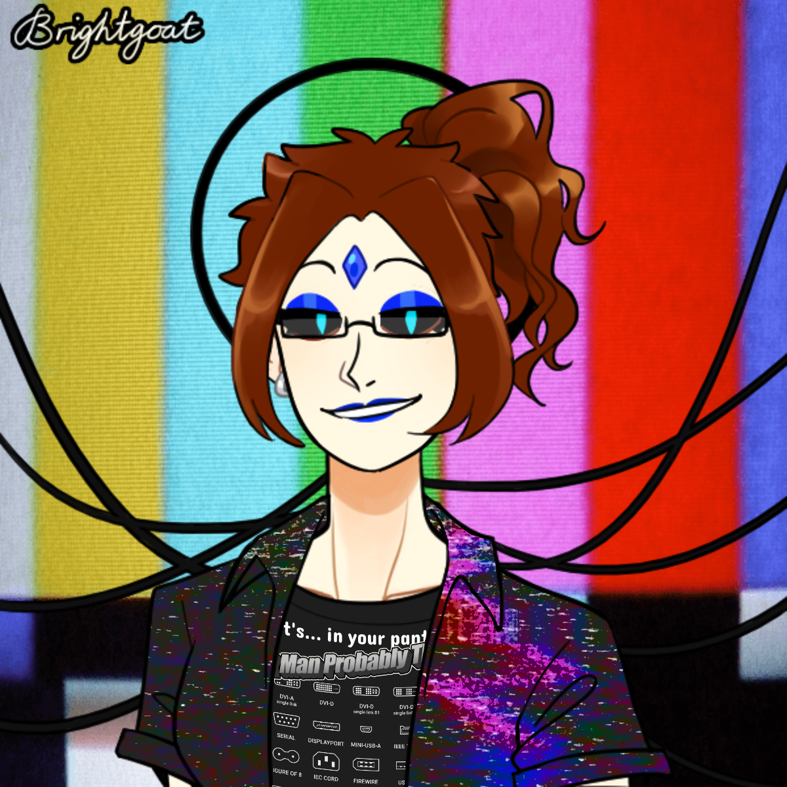
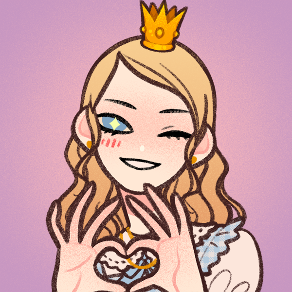
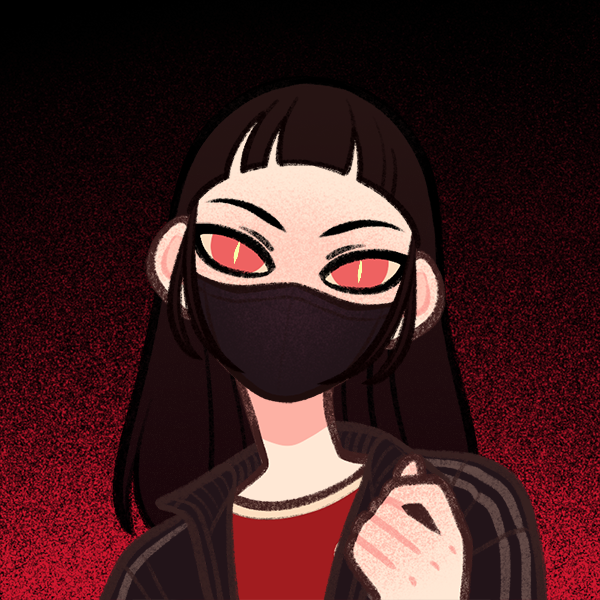
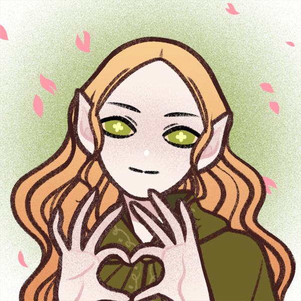
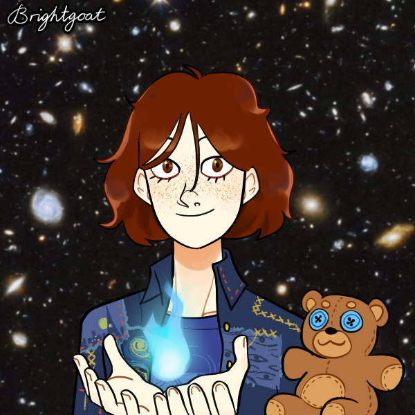
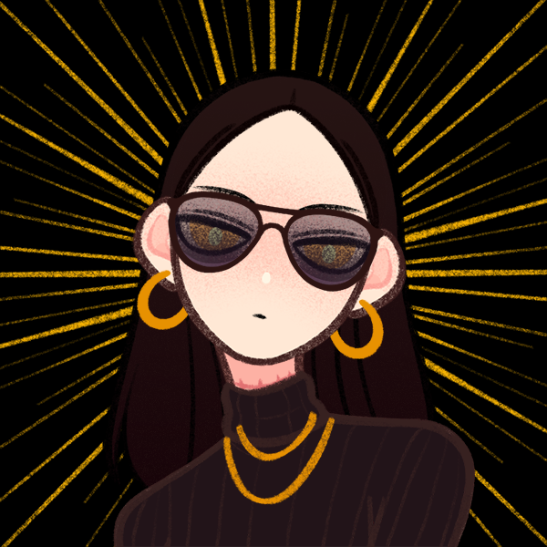

🌠 Aster
It/she
Chaotic and energetic!
Professional stress reliever and excitement engine! Yoyo-thrower and
juggler.
Learn more
-
It loves horror games for the thrill, along with platformers and
open world games!!
-
It absolutely loves Electroswing, along with a bit of Mother
Mother's more energetic songs!
- Loves spicy food a LOT. Sticky wings are its FAVE
- Is named after Stars!
- Forward liiiike... 30% of the time?
🥖 Medium
She/fae
Warm and kind, if a bit anxious
A pathologically obsessed bread baker. Solves Rubik's cubes and picks
locks. Likes the little things in life.
Learn more
-
She loves to care for those around her, which is why baking is one
of her favorite hobbies, but cooking is a favorite too.
-
Puzzle games or life sim games are her personal preference.
Narrative games are a universal "like" but it is particularly
strong in Medium.
- Her favorite band is The Crane Wives.
- Sweet tooth. Particularly loves sour candy.
-
She is named for the vast, cool expanse of nothing between stars,
the Interstellar Medium.
- Forward roughly 40% of the time.
🚬 Rogue
It/she
Chill and punk
Protector, cool kid, the one who gets shunted to the front for chores
out of the house lmao. Totally obsessed with our home city. Also likes
shooter games and parties.
Learn more
-
Huge obsession with our home city. Knows a ton about it and loves
to show people around.
-
The punk likes punk music, staggering I know. Don't wanna list any
because folks will go "uh that's not punk that's alt sharpcore"
like I'm supposed to know what the hell that is
- Ramen and other noodle soups are its favorite.
- Rogue planet. Simple as a name gets.
- Forward 'bout 10% of the time.

📋 Flare
It/she
Methodical and analytical
Professional. "Worksona". Master of to-do lists, discipline, and
technology. Android (who hates LLMs).
Learn more
-
Favorite bug is floating point imprecision. What, you don't have a
favorite kind of bug?
- Listens to Machine Girl and other breakcore.
- Mealpreps.
- Named for a solar flare, a concentrated burst.
- Forward 10% of the time, always during work hours.

👑 Princess Alpheratz von Andromedae
She/her
Sleepy and giggly
Princess of Dreamworld, and a budding artist!
Learn more
-
Absolutely adores painting, and wants to use it to bring her vivid
dreams into reality, if in a limited way!
- She likes Katzenjammer and Paloma Faith!
-
She prefers sedated flavors, such as cheese on bread with jam.
- Alpheratz is a neighbor star to Sol, our star.
-
Forward a slim fraction of the time. If she is forward, we're
usually asleep!

🦋 Mactavi
She/her
Sharp, quiet, precise
A cutting rational edge. Understands our needs and desires better than
anyone else, and gives advice to us.
Learn more
-
Painting and writing. Anything that can communicate raw emotions.
-
Likes a lot of littleDEATH. Soft spot for songs about bad
relationships.
- Likes braised meats on rice.
-
Mactavi, first person varient of Macto. To reward, to punish, to
sacrifice, to break, to kill. The invisible Fermi Constellation of
the Spider.
- Forward a razor thin amount--five percent or less.

🍃 Lyra
She/her
Gentle and warm
Growth incarnate. The soft days of warm sunlight. Comfort when
necessary, and slow growth.
Learn more
-
Lyra is a constellation representing the Lyre of inspiration,
containing Vega, the north star we will take when our axis
wobbles.
- Almost never forward.

🔦 Nebula
They/them
Quiet and shy
Survival instincts, but also hope. Paranoia, sometimes, but a little
flashlight in the darkness that refuses to dim.
Learn more
- Likes survival crafting games, especially if they're scary.
- Shares a lot of songs with Horizon
-
Named for the swirling gas clouds that birth stars. They are our
dim but growing light.
- Almost never forward.

🌅 Horizon
They/it
Intense
The border between light and darkness. The event horizon where all
light is consumed, and the disc that is the brightest place in the
universe. Sunrise, and sunset. Dark recollections of the past, and
furious demand for a brighter future.
Learn more
- Shares a lot of songs with Nebula.
- The event horizon. Sunrise.
- Almost never forward.